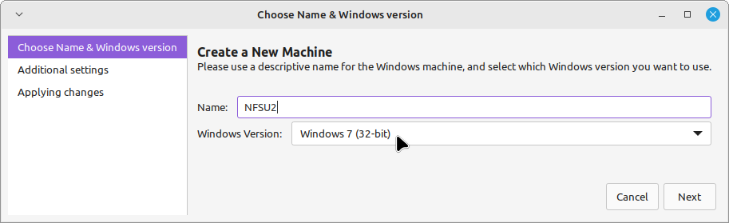
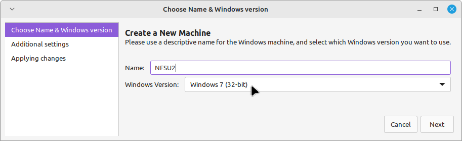

Linux Gaming
Over the years the gaming ecosystem thrive mostly on Windows platforms alone, and large studios just can't afford to release titles much on Linux given its low potential market at the time. But now the times have changed. Wine was introduced to the world, Bottles and Lutris came for convenience and more compatibility support, and Valve have given us Proton to play games with little to no issues in a Linux environment.
And so I made this page to not only record what I did to make older games run on modern Linux systems, but also to run modern titles as well as to hopefully convince some users to switch to Linux. But regardless, this is just a space for Linux Gaming.
Steam
Steam is undoubtedly one of the leading games marketplace that is heavily favored by the many. It's been going solid for years and even made it to the hardware and OS space. They're one of the remaining corporates who seemingly cares about their consumers given all the options and services they provide for everyone (looking at the bundles, refunds, and both Steam OS and Proton ofc).
They made it possible so that games who were used to be Windows only, can now be 'easily' run on various Linux systems. In this section we'll discuss how to run some Steam games on Linux.
Check the Game First
Firstly, see if the game runs just fine when the compatibility settings is on and is on default options. To enable it, go to Settings > Compatibility and check 'Enable Steam Play for all other titles'. Feel free to select any version you'd like to use by default to all games. If it works then congratulations!
Launch Command
If nothing works then a command is needed to specify what it needs to work with when launching. Some games show a DirectX 11 error, and for that you can enter the following: PROTON_USE_WINED3D=1 %command%.
Enter it on Manage > Properties > General > LAUNCH OPTIONS.
Next, go to Compatibility and choose a version. I usually use Proton 9.0-4 or Proton 5.0-10, for modern titles and older games respectively. It could be different in your case so feel free to try any options.
Locale Command
There are some games that need a specific locale in order to run. For instance, we would like to run a Japanese game that we added on our Library in Steam, we could do so by entering HOST_LC_ALL=ja_JP.UTF-8 %command% in the LAUNCH OPTIONS. If you want to set it to other languages just change the country locale code.
If you need to put multiple commands in a game's LAUNCH OPTIONS, just put a space between the two and add %command% at the end of the line.
For example: PROTON_USE_WINED3D=1 HOST_LC_ALL=ja_JP.UTF-8 %command%
And that's it! Hopefully the issues get resolved. If not, there are still forums and sources out there that can help you.
RPG Maker 2000-2003
RPG Maker is undoubtedly one of the most influential game engines and even became its own genre starting around 2012-2013 for introducing well-beloved titles in the horror landscape. Games such as Ib, The Crooked Man, Ao Oni, and so much more gems became possible thanks to these tools. RPG Maker is just popular that even other games like Mad Father which was made with WOLF RPG Editor still falls under this game category.
Preparation
In this tutorial, we'll use a standalone version of Yume Nikki, meaning that we won't use the Steam version. With this method we don't have to launch Steam every time just to open Yume Nikki. If you don't have a copy of Yume Nikki, you can download this archive by Uboachan, then extract it.
Make a new folder which will contain your RPG Maker games. In this example I'll make a folder named RPG Maker under Document/Games, e.g. /home/dinpixels/Documents/Games/RPG Maker/. This is for the sake of convenience when setting up games onwards.
Copy the extracted folder to the path.
EasyRPG Player
Going into the folder you can run the RPG_RT.exe with Wine, however it won't launch as it needs to be in Japanese locale. We can setup Wine with a Japanese locale, but personally I find it a hassle for this setup, and so we will use an interpreter instead called EasyRPG Player which already supports multiple languages. For more info you can read them here: https://wiki.easyrpg.org/user/player/special-features
Download their official Linux build here: https://easyrpg.org/downloads/player/0.8/easyrpg-player-0.8-linux.tar.gz
After downloading it extract the file to the folder we made.
Open the EasyRPG Player and you should see something like this. As you can see, the name of yumenikki appears under the Games list. This is the same game folder of Yume Nikki we extracted before.
To navigate around the menu is just as the same as with RPG Maker games:
| Key | Action |
|---|---|
| Z | confirm |
| X | cancel |
| Key | Action |
|---|---|
| ⬆️ | move up |
| ⬇️ | move down |
| Key | Action |
|---|---|
| ➡️ | move left |
| ⬅️ | move right |
Close EasyRPG Player and go back to the folder, then rename it to Yume Nikki. Open EasyRPG Player and you should see that it's updated now with a proper name.
Press Z to enter the Games menu. By now Yume Nikki should be highlighted.
If everything went correctly without any problems, Yume Nikki should run just fine after pressing Z key again. From there you'll be welcomed with its title screen. Feel free to test if everything works!

Still, if for some reason the game has missing files, it means that its necessary assets, the Run Time Package, isn't complete. To fix this issue proceed to the instructions below.
Run Time Package
Firstly, go to RPG Maker's Run Time Package page and download the RPG Maker 2003 and RPG Maker 2000 RTPs: https://www.rpgmakerweb.com/run-time-package
The RTP for RPG Maker 2003 comes in a ZIP archive so extract it. Both programs only runs on Windows, so in order to get the files we need we'll run them via Wine. We'll start with RPG Maker 2000's RTP:
Proceed with the entire installation.
Feel free to set it to a location you prefer to. Just take note of its install path as we'll need that later.
With that the installation should finally start and proceed smoothly...
And done! Now we have the necessary RTP files for RPG Maker 2000.
After that simply do the same things with the RPG Maker 2003's RTP installer. Don't forget to take note of its installation path as well. Once that every thing is done, go to their installation paths and copy their folders into the RPG Maker folder we made (i.e. the folder which will hold our RPG Maker games).
Since I left the installation paths to default, they were installed at: /home/YOUR USERNAME/.wine/drive_c/users/YOUR USERNAME/AppData/Roaming/KADOKAWA/Common/
With that, the RTP files would be read by EasyRPG and fix the RTP issue. You can open and test the game to see if it's running.
If it's running without any problems then that's great. Still, about the EasyRPG games list we only want valid games to be listed. We need to get rid of the 2 RTP folders.
Move to the parent folder Games and create a new folder name Assets. We'll store these RTP folders in ~/Documents/Games/Assets path.
Now we have a fully working Yume Nikki! Still, given this setup we need to launch EasyRPG Player first every time we're going to play it. Therefore in order to have a standalone app feel and experience to it, we'll make a Desktop Entry and add it directly to our Linux system's recognized apps (e.g. it will appear on start menu as a valid program).
Game Launcher
We'll start making a launcher that would store the game's name, icon, description and command on launching Yume Nikki via EasyRPG Player. First, create an empty file anywhere and name it YumeNikki.desktop.
Open the file with a text editor and enter the following:
[Desktop Entry]
Type=Application
Name=Yume Nikki
Comment=Traverse into the depths of dreams
Icon= put the path to your icon (e.g. png, icns, ico) here
Exec=/home/YOUR USERNAME/Documents/Games/RPGMaker --project-path "/home/YOUR USERNAME/Documents/Games/RPGMaker/Yume Nikki"
[Desktop Entry] just tells the system that this file is a launcher.
Type=Application tells the system that this is an application.
Name is the alias for this launcher.
Comment is the launcher's description.
Icon is the path to the launcher's icon.
Exec is the execution command of a program.
If we take a look at the Exec's value there are 2 paths, 1 without open and close parentheses while the other is encapsulated with it. The reason for this is that the first path refers to the location of EasyRPG Player. Then, after finding and running EasyRPG Player, we used its built-in command flag --project-path. It expects a string of an RPG Maker game's path, hence the open and close parentheses around it.
In short, Exec executes EasyRPG Player with the first path. Then, the EasyRPG Player uses its --project-path command to locate the game and run it.
Anyways with that you should have something like this:
Save the file. Now its name and icon has been updated. If you hover on it, details like its comment will show up.

Back to the file and text editor, enter the extra details below Exec:
Terminal=false
Categories=Game;
StartupNotify=false
It just tells the system that this launcher won't open a terminal, it falls under the Game category (e.g. seen in the start menu), and that it doesn't notify the user whenever it launches.
After this, save the file and close it. Then, move this launcher to the path of available and registered applications /usr/share/applications/. If you can't access the files you need to allow root priveleges. Simply right click and Open as Root.


After moving the file, open up a terminal and enter the sudo update-desktop-database command.
This command updates the cache list of registered and valid apps in the system. If it appears on the start menu and launches when wanted to, then it's a success.
Feel free to make shortcuts of Yume Nikki anywhere in your Linux system. Enjoy!
Need for Speed Underground 2
This game was a big part of my childhood. It's one of the games that even with no access to the internet, it will keep you hooked with its replayability and charm. Particularly, it offers a large array of parts for customizability, as well as an aesthetic (retrofuturistic-like even) open world to explore.


Mount the Disks
If you have your own copy of NSFU2's 2 disks, please use it. Otherwise you can download these archived ISOs that are bundled with the "NoCD" patch, "v1.2" patch and widescreen fix mod.
Internet Archive file: https://archive.org/details/NFSU2-USA
Even if you have your own disks, I'd still recommend downloading the ZIP as they have all the patches included. It's a bit hassle to browse each file from the web.
Anyways, once the files are ready, extract them. Go to the extracted folder NSFU2, open the Disk folder, and mount each ISO file.


With that they're ready now for being available during installation later.
For this guide we'll use Wine to run the game, and for convenience and set configurations easily we'll use WineGUI.
Setup WineGUI
To install the 2 disks via WineGUI, create a new prefix there first. I recommend making a x32 Windows 7 environment to run this game.
 

And skip the next steps to set them to default. Wait for it to complete the setup. Once the prefix is done and ready, select Run Program... and find the mounted 1st disk's folder. Select the setup.exe.


Disk 1 Setup
If it works, you'll be greeted with the setup. From there just input the code you have or the ones from the downloaded archive: TFXX-888C-DRP7-CP3J-RLD0


After entering the code, choose the Advance User to see the options it offers. In this guide we'll select Full to include all files on install.

Proceed on next steps and skip this popup with Register Later. (Man, the sound's nostalgic it makes me remember some PopCap and GameHouse titles)
The installation starts (finally).
Disk 2 Setup
When asked for the 2nd disk, go to Run Program... again. Go to the 2nd disk's mount folder and select the RunGame.exe program.
After selecting the executable, press OK on the popup. If successful, the installation will continue to the 2nd part.
And that's it! Or it supposed to be, but there's few fixes that must be done first. You're all free to test it for a drive first though.

With the setup being done, unmount the disks.
v1.2 Patch
Use Run a Program... again and find the extracted NFSU2 folder. Go to the Patch folder and select the NFSUG2V1-2SP.EXE program to run it.
No CD Patch
Once it's finished installing, go to the NoCD folder in NFSU2 and copy the SPEED2.EXE file into the installation path of Need for Speed Underground 2.
If the prefix you made isn't the default and has NSFU2 name based from the previous steps in this guide, copy the file into the ~/.local/share/winegui/prefixes/NFSU2/drive_c/Program Files/EA GAMES/Need for Speed Underground 2 folder and choose Replace or Replace All when asked.

And with that, the No CD patch has been applied.
Widescreen Fix Mod
After applying the patch, copy the contents of Widescreen Fix folder into the same installation path of Need for Speed Underground 2: ~/.local/share/winegui/prefixes/NFSU2/drive_c/Program Files/EA GAMES/Need for Speed Underground 2
And done! Almost. The Widescreen Fix mod won't work immediately as the dinput8.dll can't be detected for some reason. So in order to fix that, go to Wine Config:
Switch to the Libraries tab, then enter or find dinput8 on the dropdown that's adjacent to the Add button. Press Add, and hit Apply.

With that the dinput8.dll is available to this entire prefix, and it should be detected by the game by now. Then, proceed on going to the scripts folder in the game's folder, and open the NFSUnderground2.WidescreenFix.ini file with any text editor.
From there, edit the parameters you'd like to adjust. For instance, you might want to adjust the ResX and ResY properties to your preferred resolution.
Setup Shortcuts
Now that we have everything setup, there's only few things left for the sake of convenience in launching the game: setting up shortcuts for the WineGUI and Desktop (or any folder).
WineGUI Shortcut
We'll start with a WineGUI shortcut. Go to WineGUI's Applications list and press the ➕ button to add a new shortcut.
Fill in the blanks. As for the command just Select executable... and find the game's folder, then select the SPEED2.EXE program. If all necessary fields are satisfied, hit Save.

That's pretty much it. Now you have a shortcut in the WineGUI to run it easily from there.
Desktop Entry
Now we'll make a shortcut that we can use pretty much anywhere. First, go to Desktop and make a NFSU2.desktop file:
Right click on Desktop and select Create Launcher...
Set the name to NFSU2 string, and comment values to anything you prefer.
Enter the command field with the following line: env WINEPREFIX="/home/YOUR USERNAME/.local/share/winegui/prefixes/NFSU2" wine-stable "/home/YOUR USERNAME/.local/share/winegui/prefixes/NFSU2/drive_c/Program Files/EA GAMES/Need for Speed Underground 2/SPEED2.EXE", where YOUR USERNAME should be changed to yours.
Then, input the path with this string: /home/YOUR USERNAME/.local/share/winegui/prefixes/NFSU2/dosdevices/c:/Program Files/EA GAMES/Need for Speed Underground 2 where YOUR USERNAME is the same as the previous one.
Then, set the icon. Click the icon box and select from the available icons.
If the game's icon is not present on the list, proceed on using the path of the icon within the game's folder. Save the launcher first, then right click on the NFSU2 launcher and open it with a text editor.
In the text editor, go to the Icon property and enter the game icon's path: /home/YOUR USERNAME/.local/share/winegui/prefixes/NFSU2/dosdevices/c:/Program Files/EA GAMES/Need for Speed Underground 2/NFSU_icon.ico


Done! Now a shortcut for NFSU2 has been made. If you want this shortcut to be available globally, i.e. can be accessed in the start menu, jump to the Desktop Entry guide for more info.
End
It's not the end of the road, but only this specific guide...
With everything setup I hope you got it right and find it kinda fun to see things work. Enjoy your Need for Speed Underground 2 experience on Linux!
Wine x WineGUI
A guide for setting up Wine and WineGUI in Linux.
Preparation
Enable 32 bit architecture first if your system is 64 bit:
sudo dpkg --add-architecture i386
Then check for your distribution name:
cat /etc/os-release
Look for a line with either UBUNTU_CODENAME or VERSION_CODENAME. If both are present, use the name after UBUNTU_CODENAME. Take notes of that name.
Adding the Repository
Download and add the repository key:
sudo mkdir -pm755 /etc/apt/keyrings
wget -O - https://dl.winehq.org/wine-builds/winehq.key | sudo gpg --dearmor -o /etc/apt/keyrings/winehq-archive.key -
Then choose from the commands below that is based from the distribution name or UBUNTU_CODENAME you have and enter it:
| Distribution name | Command |
|---|---|
| noble Ubuntu 24.04 Linux Mint 22 | sudo wget -NP /etc/apt/sources.list.d/ https://dl.winehq.org/ |
| jammy Ubuntu 22.04 Linux Mint 21.x | sudo wget -NP /etc/apt/sources.list.d/ https://dl.winehq.org/ |
| focal Ubuntu 20.04 Linux Mint 20.x | sudo wget -NP /etc/apt/sources.list.d/ https://dl.winehq.org/ |
| oracular Ubuntu 24.10 | sudo wget -NP /etc/apt/sources.list.d/ https://dl.winehq.org/ |
| bookworm Debian 12 | sudo wget -NP /etc/apt/sources.list.d/ https://dl.winehq.org/ |
| bullseye Debian 11 | sudo wget -NP /etc/apt/sources.list.d/ https://dl.winehq.org/ |
| trixie Debian Testing | sudo wget -NP /etc/apt/sources.list.d/ https://dl.winehq.org/ |
After that, update the packages:
sudo apt update
Wine Installation
We want a stable release for this guide, so enter the following command:
sudo apt install --install-recommends winehq-stable
WineGUI Installation
Then get a package from these releases: https://gitlab.melroy.org/melroy/winegui/-/releases
Proceed on installing the downloaded file.
And that's it! Enjoy using your WineGUI! ☕
Desktop Entry
Desktop Entries are basically links to programs. Just like in Windows they act as shortcuts to applications, making it more easy to run on the go rather than navigating numerous folders.
In this guide we'll talk about how to make one, how to add them in a category (e.g. games, tools, etc.), and finally adding them to the application database, i.e. making them available to the start menu.
Setting Up Desktop Entry
For this demonstration I'm going to download and use Celeste 64, but you're free to download any game or app as you want.
To make a Desktop Entry, go to Desktop (or any folder really) and make a new file. The extension should be .desktop. In this example I'll name the Desktop Entry as celeste_64.desktop.
Open the file with a text editor and write [Desktop Entry]. This tells the system that it is a Desktop Entry. Then, below it write Type=Application. This tells the system that it is a launchable application.
Save the file. After saving it you should see that it changed its icon into generic, default program icon.
Next, enter the Name and Comment of this Desktop Entry. The Comment refers to its description when viewed from anywhere and particularly on the start menu.
Then, enter the Exec, which is the path to the executable file.
Save the file and open it. Select Launch Anyway to allow running the program just this time, or Mark Executable so it's allowed to run every time.
And there you have it! We have made a Desktop Entry for a program.
Of course we can add more details to the Desktop Entry such as its icon, categories, and more.
To add an icon simply enter Icon and the absolute path of the file.
Save it and you should see the icon has been set. In this example I made an icon in PNG format, and set it as the Desktop Entry's icon.
Then I set its categories with Categories=Game;ActionGame;3DGraphics;. This makes it easier to find when navigating like in the start menu.
In general, we just covered the basics. Now we have a program shortcut that can run from pretty much anywhere (as long as a folder doesn't need any previleges).
But what if we want the Desktop Entry to be available to the list of available programs in the system, that is, listed and accessible through the start menu? We can do that by updating the desktop database.
Updating the Apps Database
To update the database of our programs, we need to copy the file first into the folder containing them, then we'll enter a command later to register it.
Go to the /usr/share/applications/ folder. Right click and Open as Root.
Copy the Desktop Entry you made into the opened folder with root previleges.
Finally, open a terminal and enter sudo update-desktop-database to update the cache database of desktop files.
Aaaand done! Now the Desktop Entry is added to the recognized apps in the system. Going to the start menu you should see the Desktop Entry now under the Games category.
Credits
Notes are inspired by Nora's Hideout theme, and Github Markdown's notes.
The SVGs used for notes are made by Dazzle Ui in CC Attribution License via SVG Repo.